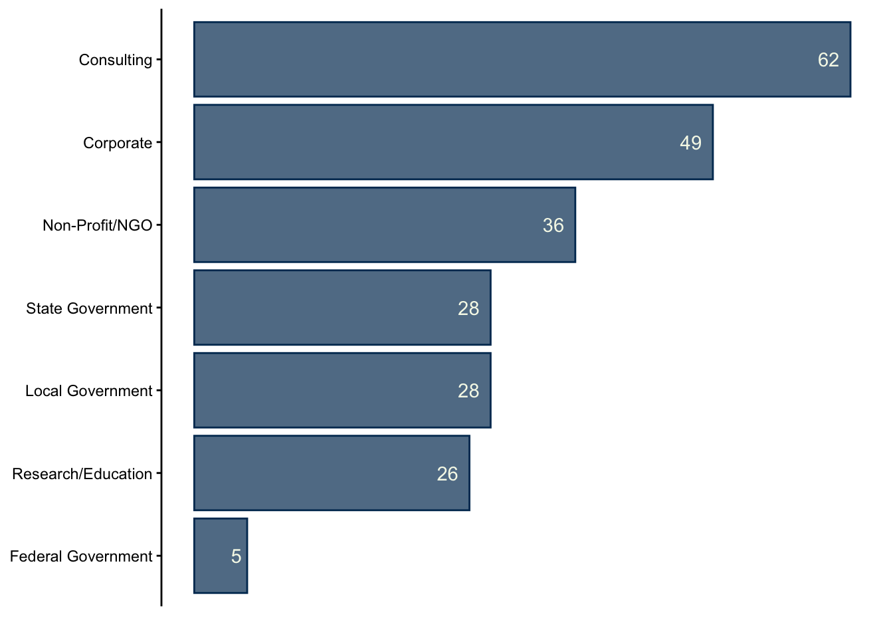
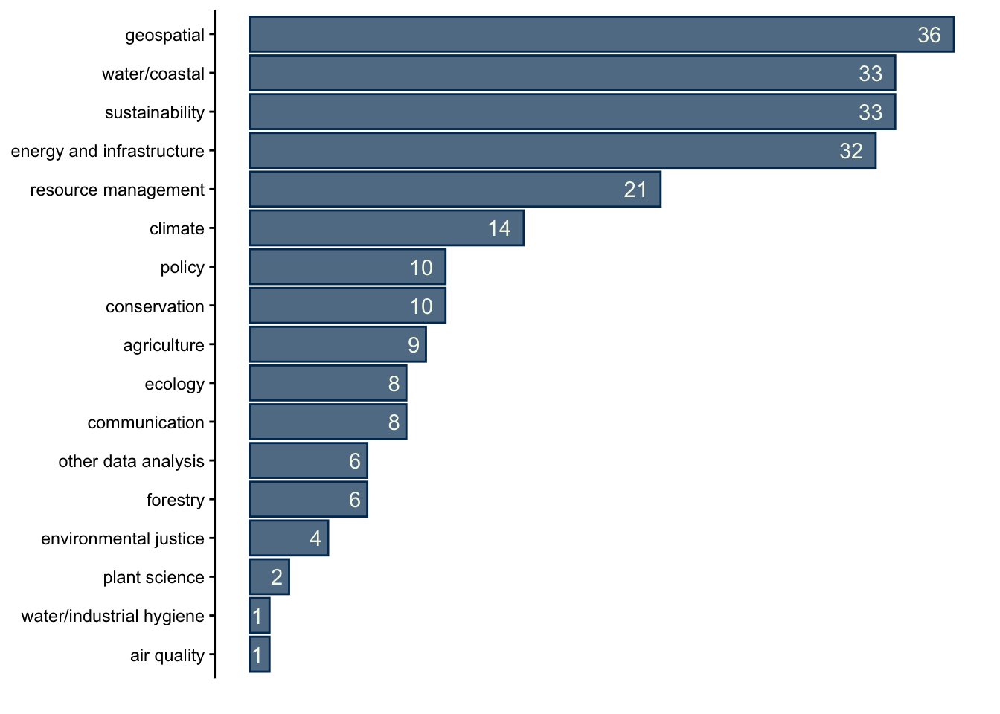
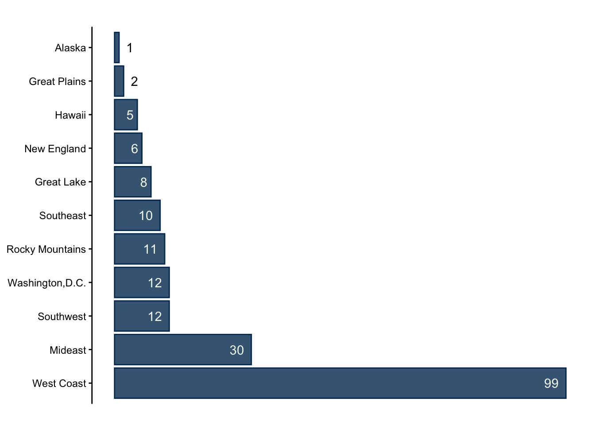
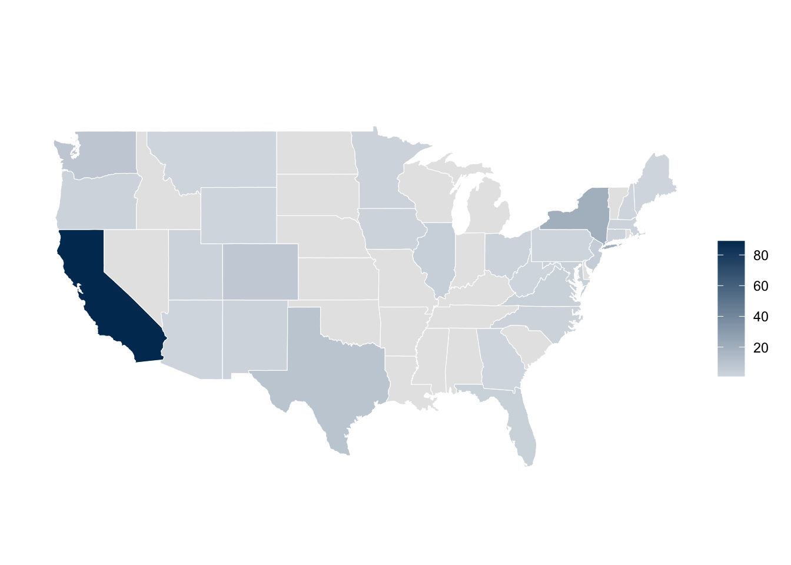
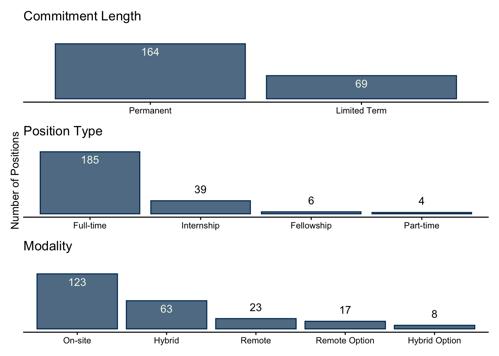
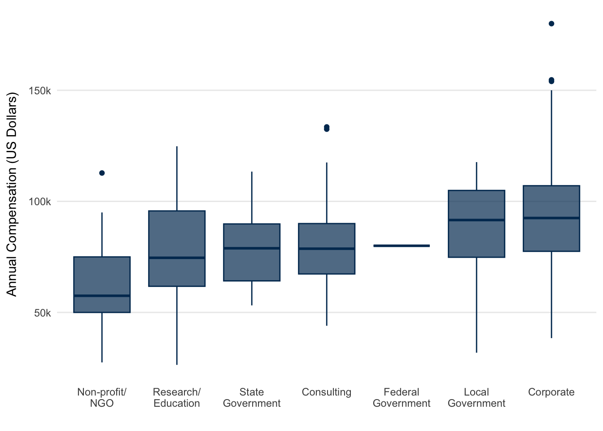
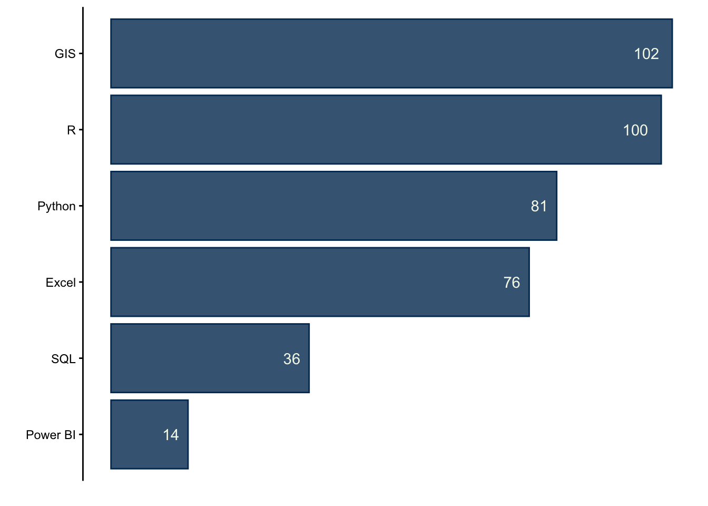
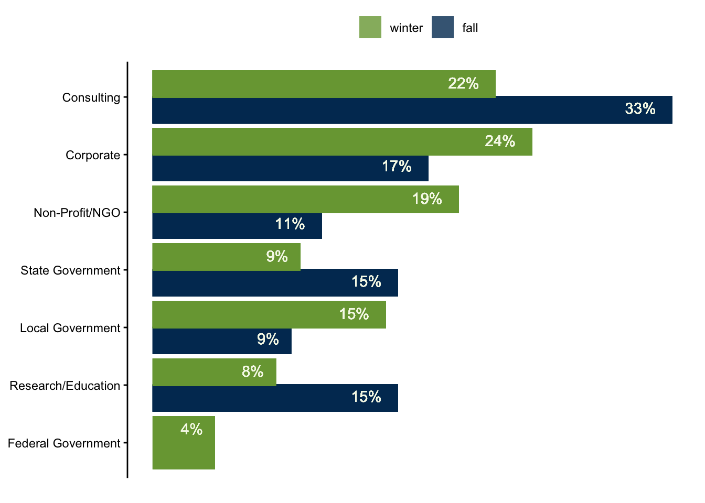
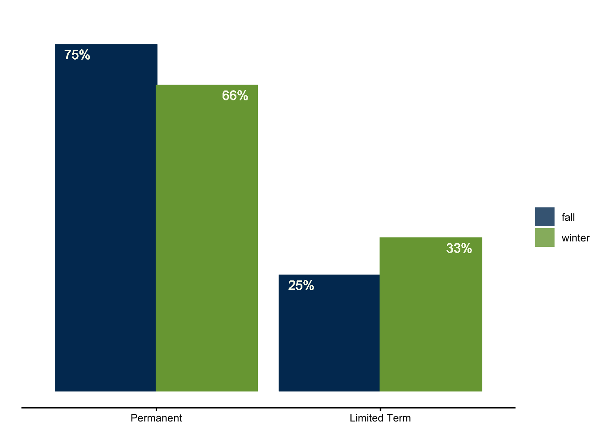

EDS Job Market Report: Fall and Winter
Data collected between October 2025 and March 2026
The following report contains statistics and visualizations summarizing the job openings being posted to online services such as Indeed, Conservation Job Board, CalCareers, and others. Keywords such “environmental data science”, “environmental analyst”, and “climate analyst” (just to name a few, though a wide range were used) were searched for, and roles pertaining to environmental data analysis, planning, or communication were pulled and re-posted on the BrenConnect website.
This report summarizes the listings reposted and data collected between October 2025 and March 2026, and offers a brief comparison between the fall (October through early January) and winter (January through March) quarters. In total, there are 234 job listings summarized in this report, with 104 pertaining to the fall and the other 130 to the winter. Example job listings from the winter quarter are also included throughout.
MEDS 2026 Cohort
The Master of Environmental Data Science (MEDS) program at the Bren School teaches data techniques such as statistical modeling, machine learning, and data visualization. Core skills include R, Python, SQL and version control in GitHub, and therefore students typically aim for jobs that utilize these programming languages and practices. Students are also interested in positions that involve GIS/geospatial methods.
Although most, if not all, positions that exemplified the skills taught in the MEDS program were posted, the job search was somewhat customized to the preferences of the current cohort. This was likely most influential when considering the location of the position, as the current class is particularly interested in California, the West Coast of the United States, Texas, and large cities such as New York City and Washington, D.C, with some international and remote interest as well.
These factors guide the job openings posted on BrenConnect, and therefore the results presented in this report.
October 2025 through March 2026
Sector
The Career Development Team classifies alumni employment into seven categories. Following this system, we find that the majority of position listing were in consulting (27% of all posts). The other sectors break down as:
- Corporate: 21%
- Non-Profit/NGO: 15%
- State Government: 12%
- Local Government: 12%
- Research/Education: 11%
- Federal Government: 2%
Environmental Field
Along with variety in sectors, roles reflected a wide range of environmental niches. The top three pertained to geospatial work (15% of all positions), water/coastal resources (14%), and sustainability (14%). It should be noted that most consulting positions, unless a specific environment was listed, were categorized under resource management.

Location
As mentioned, the preference of MEDS 2026 cohort had a big influence on which positions were reposted to BrenConnect, and therefore exist in this dataset. Primarily, there is a very large bias for roles located in California.


There were a total of 11 international positions posted, in India, Sweden, Canada, Singapore, the Netherlands, Australia, Austria, and the UK. There was also one role in Puerto Rico.
Position Details
Overall, the majority of jobs were permanent, full-time, and on-site positions. Jobs were classified as “limited term” if they listed specific durations, such as “one-year placement”.

The median compensation of all salaried positions (meaning, excluding part-time work and internships) is 80,000 US dollars. The breakdown by sector can be seen below.

The corporate sector has the highest outliers in the dataset, with salaries ranging all the way up to $225,000. The non-profit/NGO sector offers the smallest compensation.
It should be mentioned that not all positions in the dataset are salaried position: if they contained hourly or monthly compensation information, annual compensation was approximated (assuming a 37.5-hour work week). Part-time and internship positions are excluded from these figures.
Skills and Qualifications
GIS, R, and Python are the primary data analysis skills that employers are looking for. Many positions also specify MS Office tools such as Power BI and Excel.

It was common for positions to not list a specific coding language, but instead use terms such as “data analysis” or “spatial analysis” to convey their qualifications.
Comparing Fall and Winter
There were some fluctuations in the proportion of job listings that represent each sector, between fall and winter. For example, the percent of consulting roles dropped from 33% to 22%. Other trends include jumps in the proportion of corporate, non-profit/NGO, local government, and federal government roles in the winter.

In terms of position type, the number limited term roles such as – internships and fellowships – increased in the winter. This may be because hiring employers anticipate an influx of interns in the summer and therefore start their hiring process in early January.

Other variables were not evaluated as they are more dependent on the roles themselves than on seasonality.
Conclusion
234 environmental data science positions were retrieved from online job boards between October 28, 2025 through March 27, 2026. They covered roles in all sectors and a wide range of environmental focuses, and varied in salary, modality, commitment length, and position type. The corporate and consulting sectors were the highest paying, and the most popular data analysis qualifications were proficiency in GIS and R.
When comparing fall to winter, it becomes apparent that the number of limited term position listings, such as internships, increase in the winter months. Additionally, roles in federal government were only found in the winter (perhaps related to it being the start of the calendar year).